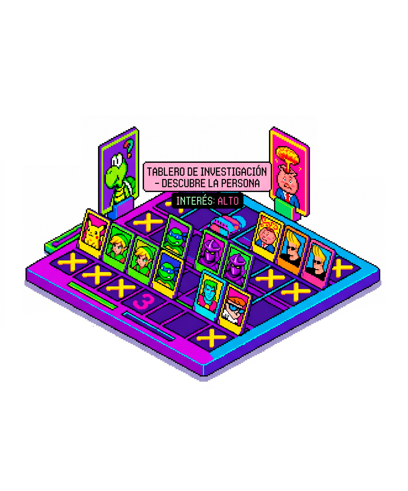
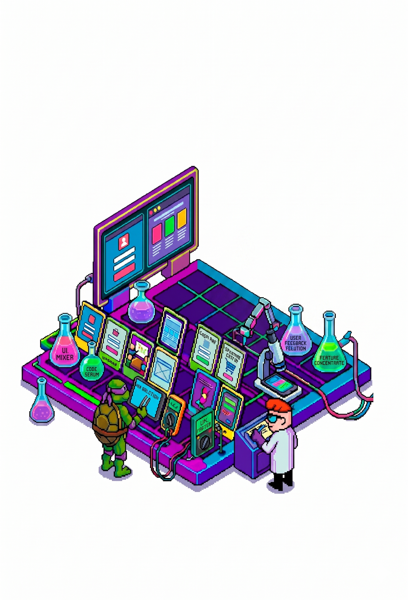
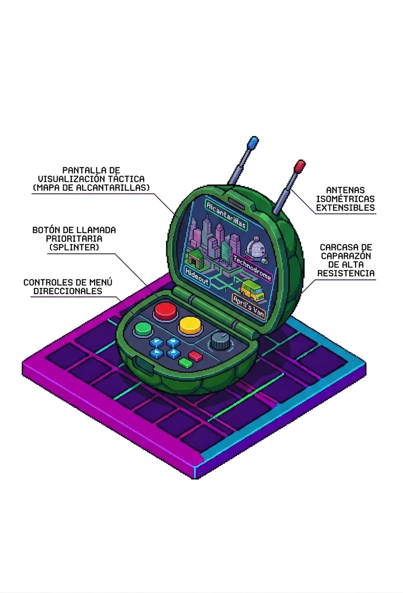
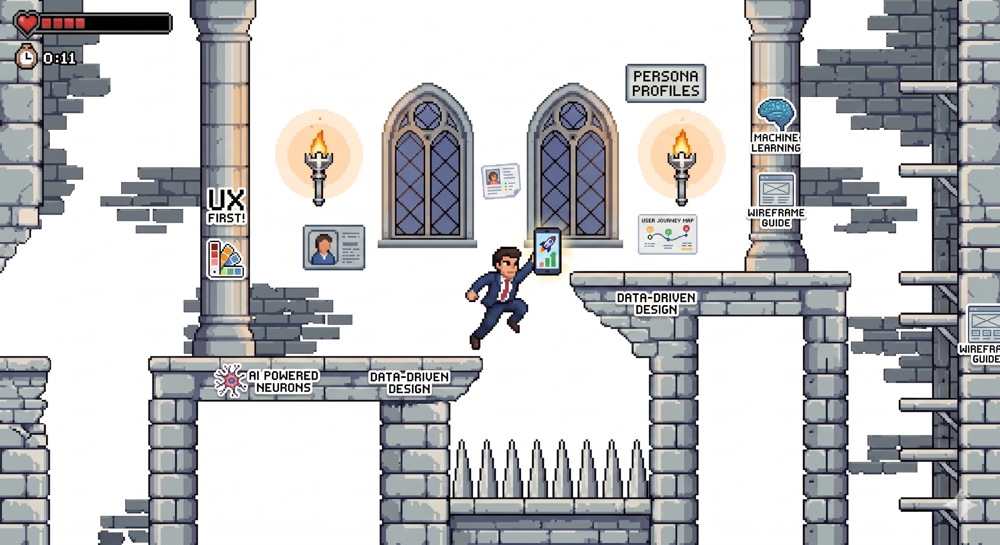

Lo que hago
y cómo lo hago.
Consultoría UX para startups que escalan en LATAM — investigación de usuarios, diseño de producto, experiencia e interfaces y optimización de conversión.
01 — INVESTIGACIÓN
Te acercamos
a tus usuarios
Dirigido a:
- Startups que no conocen bien a su usuario objetivo
- Productos con alta tasa de abandono sin causa clara
- Equipos que asumen lo que el usuario quiere sin haberlo validado
Investigamos, escuchamos y entendemos a tus usuarios para ofrecer la solución adecuada al problema correcto — con evidencia real, no suposiciones.
Ver este servicio →
02 — PRODUCTO
Definimos y
validamos tu MVP
Dirigido a:
- Founders con una idea que no saben bien cómo llevar a producto
- Equipos que construyeron demasiado sin validar
- Startups pre-seed que quieren llegar a inversores con algo concreto
De idea a producto validado, rápido y centrado en el usuario. Sin desperdiciar recursos en lo que no importa — antes de escribir una línea de código.
Ver este servicio →
03 — DISEÑO
Potenciamos la
experiencia de uso
Dirigido a:
- Productos con usuarios activos pero baja retención o engagement
- Equipos que diseñaron el producto internamente y quieren una mirada externa
- Apps que crecieron sin sistema de diseño y empezaron a ser inconsistentes
Optimizamos cada interacción para que el producto sea claro, fluido y difícil de abandonar. Desde la arquitectura de información hasta el copy de cada botón.
Ver este servicio →
04 — CRECIMIENTO
Escalamos
tu crecimiento
Dirigido a:
- Productos con tráfico pero baja tasa de conversión
- Equipos que necesitan rediseñar su landing para un nuevo posicionamiento
- Negocios que quieren crecer sin aumentar el budget de adquisición
Diseño estratégico orientado a resultados — cada decisión apunta a mover una métrica concreta. Auditorías, rediseño y optimización de conversión.
Ver este servicio →
AI MVP Rescue
¿Creaste tu app con IA
y ahora no sabés cómo seguir?
En 48 horas te entrego un diagnóstico concreto de los problemas de experiencia que están frenando tu producto — y una llamada para explicarte cómo resolverlos.
- Revisión completa de tu flujo principal con metodologías SDD
- Documento de hallazgos con prioridades claras
- Llamada de 30 minutos para revisar los resultados
- Sin costo · 2 cupos por mes
Solo acepto 2 proyectos por mes para garantizar la calidad del análisis.
Aplicar al UX Checkup
¿Tenés un producto que mejorar
o una idea que validar?
Escribime y coordinamos una llamada de 30 minutos sin costo. Te cuento cómo puedo ayudarte y si tiene sentido trabajar juntos.
Escribime a info@uxuaria.com